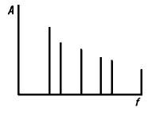
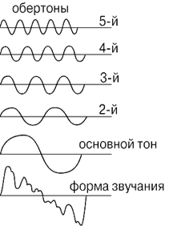
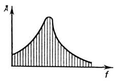
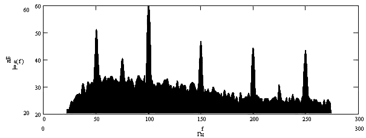
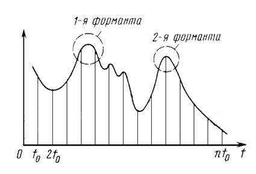
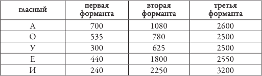

3.3 Спектральный состав звука
Физические
величины, характеризующие звук, являются функцией времени, поэтому их можно
представить в виде суммы гармонических колебаний с различными частотами и
амплитудами (см. раздел 1.1). Зависимость амплитуды (или эффективного значения)
гармонических составляющих звуковой волны от частоты называется спектром звука.
Периодические колебания при разложении в ряд Фурье представляются как сумма гармоник с различной амплитудой. Такие гармоники образуют дискретный или линейчатый спектр.

Дискретные спектры характерны, в основном, для музыкальных звуков. При этом самая низкая по частоте гармоника называется основным тоном, а все остальные – обертонами.

Частота
основного тона определяет высоту звука, а обертоны придают звуку определённую
тембровую окраску (тембр). Если в звуке мало обертонов,
то тембр оценивается как глухой, пустой, неокрашенный; если сильно выражены
первые обертоны – сочный, полный; если сильно выражены высшие составляющие в
области 3000 – 6000 Гц – пронзительный, металлический, резкий, яркий. На рисунке
приведены осциллограммы звуков одинаковой высоты, исполняемых на рояле и
кларнете. Период у обоих колебаний
одинаков, но они сильно отличаются друг от друга по своей форме и,
следовательно, различаются своим гармоническим составом.
На
следующем рисунке изображены спектры этих звуковых сигналов. Так как высоты
звуков одинаковы, то и частоты тонов - основного и обертонов - одни и те же.
Однако амплитуды отдельных гармоник в каждом спектре сильно
различаются.
Непериодические колебания сложной формы (случайные или одиночные процессы) могут быть представлены с помощью интеграла Фурье в виде суммы бесконечно большого числа гармонических составляющих, образующих сплошной спектр.

Сплошной широкополосный спектр имеют неупорядоченные во времени звуковые сигналы, называемые шумом.
При этом по положению максимума спектра шумы можно разделить на низкочастотные (максимум ниже 300 Гц), среднечастотные (от 300 до 800 Гц) и высокочастотные (максимум выше 800 Гц).
Чаще
всего звуковые сигналы имеют смешанный спектр, в котором на фоне
сплошного спектра выделяются отдельные тональные составляющие.

Дискретные частоты спектра речи определяются гласными звуками, которые по своей природе близки к музыкальным. Их спектр представляет собой последовательность большого числа отдельных линий, соответствующих гармоникам колебаний голосовых связок. Основная частота колебаний голосовых связок у разных людей различна (бас – примерно 100 Гц, сопрано – 250 Гц).

Примерные значения частот формант гласных звуков русского языка приведены в таблице:

Согласные
звуки характеризуются сплошным («шумовым») спектром.